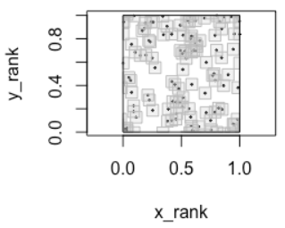

General
Misc
- Also see
- EDA >> Correlation for visualization
- Notebook >> Statistical Inference >> Correlation
- \(\mathbb{E}(υ|x)=0\) is equivalent to \(\mbox{Cov}(x,υ)=0\) or \(\mbox{Cor}(x,υ)=0\)
- A negative correlation between variables is also called anticorrelation or inverse correlation
- Independence - Two random variables are independent if the product of their individual probability density functions equals the joint probability density function
- “Correlation is a summary measure of stochastic dependence, but absence of correlation does not necessarily indicate independence.†({spatstat} book, see Geospatial, Point Patterns >> Misc >> Resources)
- Covariance
\[ \frac{1}{n-1} \sum x_i y_i - n \bar x \bar y \] - Correlation
\[ \frac{\mbox{Cov}(x, y)}{\sigma_x \sigma_y} \]- If \(x\) and \(y\) are (modeled as) jointly normally distributed (following a bivariate normal distribution), then their relationship is completely characterized by their correlation coefficient.
- When data are subject to selection bias or collected from multiple sources or schemes, spurious dependence may arise. Paper recommends permutation testing using distance correlation.
- For the correleation between two variables where the data is repeated measures, see the 2-Stage approach in Mixed Effects, General >> Model Equation
Partial/Conditional
Graphical models are powerful tools to analyze conditional independence between two variables
Partial Correlation Formula
\[ \frac{\mbox{Cov}(X, Y) - \mbox{Cov}(X, Z) \cdot \mbox{Cov}(Y, Z)}{\sqrt{\mbox{Var}(X) - \mbox{Cov}(X, Z)^2}\cdot \sqrt{\mbox{Var}(Y) - \mbox{Cov}(Y, Z)^2}} \]
Measures the association (or correlation) between two variables when the effects of one or more other variables are removed from such a relationship.
- In the above equation, I think it’s the partial correlation between x and y given z.
Misc
Packages
- {BDgraph} (Vignette) - Bayesian Structure Learning in Graphical Models
- General undirected graphical models (decomposable and non-decomposable) with continuous, discrete, and mixed variables.
- Computationally intensive tasks have been implemented in C++ along with parallel computing abilities
- {clusterGGM} - Sparse Gaussian Graphical Modeling with Variable Clustering
- {corpcor} - Efficient Estimation of Covariance and (Partial) Correlation
pcor.shrink- Shrinkage estimates of partial correlation. Returns the partial correlation matrix
- {dpcid} - Differential partial correlation identification with the ridge and the fusion penalties
- {huge} (Vignette) - Provides functions for estimating high dimensional undirected graphs from data. Also provides functions for fitting high dimensional semiparametric Gaussian copula models
- {pdcor} - Fast and memory-less computation of the partial distance correlation for vectors and matrices.
- Permutation-based and asymptotic hypothesis testing for zero partial distance correlation
- {ppcor} (Paper) - Calculates partial and semi-partial (part) correlations along with p-value
- {rpc} - Computes the ridge partial correlation coefficients in a high or ultra-high dimensional linear regression problem
- {BDgraph} (Vignette) - Bayesian Structure Learning in Graphical Models
Papers
Resources
- A Tutorial on Regularized Partial Correlation Networks
- How to fit a regularized partial correlation network, handle ordinal data, how to determine the required sample size for a network analysis, and provide a checklist with potential solutions for problems that can arise.
- Dealing with correlation in designed field experiments: part I
- Excellent tutorial on partial, joint correlations in block design
- A Tutorial on Regularized Partial Correlation Networks
Also see
Nonlinear >> dcor for packages that implement partial distance covariance/correlation methods
Nonlinear >> DepM for {generalCorr::parcorVec} for nonlinear partial correlations
Notebook for a manual method using regression models
Example:
psych::partial.r(y ~ x - z, data)Example: {correlation}
head(correlation::correlation(mtcars, partial = TRUE)) #> # Correlation Matrix (pearson-method) #> Parameter1 | Parameter2 | r | 95% CI | t(30) | p #> ----------------------------------------------------------------- #> mpg | cyl | -0.02 | [-0.37, 0.33] | -0.13 | > .999 #> mpg | disp | 0.16 | [-0.20, 0.48] | 0.89 | > .999 #> mpg | hp | -0.21 | [-0.52, 0.15] | -1.18 | > .999 #> mpg | drat | 0.10 | [-0.25, 0.44] | 0.58 | > .999 #> mpg | wt | -0.39 | [-0.65, -0.05] | -2.34 | > .999 #> mpg | qsec | 0.24 | [-0.12, 0.54] | 1.34 | > .999 #> #> p-value adjustment method: Holm (1979) #> Observations: 32Visualization

pacman::p_load(see, ggraph) correlation::correlation(mtcars, partial = TRUE) |> plot()
Graphical LASSO
Computing covariance matrices are computationally expensive while computing its inverse can be less so. This algorithm calculates the inverse covariance matrix (ICT), aka Precision Matrix, and it’s based on an interplay between probability theory and graph theory, in which the properties of an underlying graph specify the conditional independence properties of a set of random variables.
See Statistical Learning With Sparsity (Hastie, Tibshirani, Wainright)
- Mathematical introduction to graphical models and Graphical LASSO, pg 241 (252 in pdf), See R >> Documents >> Regression
Assumes that the observations have a multivariate Gaussian distribution
Uses Extended Bayesian Information Criterion (EBIC) for graph selection
\[ \text{EBIC} = -2L + E\log(N) + 4\gamma E \log(P) \]- \(L\) : Log-Likelihood
- \(E\) : Number of Non-Zero Edges
- \(N\) : Sample Size
- \(P\) : Number of Nodes
- \(\gamma\) : Hyperparameter, typically set between 0 and 0.5 with higher values indicating simpler, more parsimonious models are preferred.
Misc
- Packages
- {glasso} - The original package by the authors of the algorithm. Estimation of a sparse inverse covariance matrix using a lasso (L1) penalty. Facilities are provided for estimates along a path of values for the regularization parameter. Can be slow or nonconvergent for large dimension datasets.
- {cglasso} - Conditional Graphical Lasso Inference with Censored and Missing Values (Vignette)
- Packages
Preprocessing: All variables should be standardized.
The terms in the ICT are not equivalent but are proportional to the partial correlation between the two corresponding variables
Transform the ICT, \(\Omega\) into a partial correlation matrix, \(R\)
\[ R_{j,k} = \frac{-\Omega_{i,j}}{\sqrt{\Omega_{j,j}\Omega_{k,k}}} \]
parr.corr <- matrix(nrow=nrow(P), ncol=ncol(P)) for(k in 1:nrow(parr.corr)) { for(j in 1:ncol(parr.corr)) { parr.corr[j, k] <- -P[j,k]/sqrt(P[j,j]*P[k,k]) } } colnames(parr.corr) <- colnames(P) rownames(parr.corr) <- colnames(P) diag(parr.corr) <- 0Setting the terms on the diagonal to zero prevents variables from having connections with themselves in a network graph if you want to visualize the relationships
- Where the nodes are variables and edges are the partial correlations.
Hyperparameter, \(\rho\) , adjusts the sparsity of the matrix output
- Higher: Isolates the strongest relationships in your data (more sparse)
- Lower: Preserving more tenuous connections, perhaps identifying variables with connections to multiple groups (less sparse)
Check symmetry. Assymmetry in the ICT can arise due to numerical computation and rounding errors, which can cause problems later depending on what you want to do with the matrix.
Example: Stock Analysis using {glasso} (link)
rho <- 0.75 invcov <- glasso(S, rho=rho) # inverse covariance matrix P <- invcov$wi colnames(P) <- colnames(S) rownames(P) <- rownames(S) # check symmetry if(!isSymmetric(P)) { P[lower.tri(P)] = t(P)[lower.tri(P)] }Goal: Remove stocks relationship with market Beta and other confounding stocks to get the true relationsip between stock pairs.
Post also has a network visualization. Data was put through PCA, then DBSCAN to get clusters. The cluster assignments were used to color the clusters in the network graph.
Post also examines output from a lower \(\rho\) and has an interesting analysis of the non-connected variables (i.e. no partial correlation).
Continuous
Misc
- Packages
- {MarginalMaxTest} - Test the marginal correlation between a scalar response variable with a vector of explanatory variables using the max-type test with bootstrap
- {matrixCorr} - Lightweight, high-performance (C++) package for computing correlation matrices
- Designed for large-scale, high-dimensional data
- Kendall’s Tau, Spearman’s Rank, and Pearson’s r
- Includes ggplot visualization and options for shrinkage and robustness to improve results
- For the Pearson coefficient. variables must be Normally distributed. Also, zero does not determine independence between two variables, as only a linear dependence between the variables can be determined and the variables may have a nonlinear relationship.
- Also see Discrete >> Tau Star
- Packages
Spearman’s Rank
\[ \rho = 1 - \frac{6\sum_i d_i^2}{n(n^2-1)} \]
- \(d_i\): The difference in ranks for the ith observation
- Measures how well the relationship between the two variables can be described by a monotonic function
- Rank correlation measures the similarity of the order of two sets of data, relative to each other (recall that PCC did not directly measure the relative rank).
- Values range from -1 to 1 where 0 is no association and 1 is perfect association
- Negative values don’t mean anything in ranked correlation, so just remove the negative
- Linear relationship is a specific type of monotonic relationship where the rate of increase remains constant — in other words, unlike a linear relationship, the amount of change (increase or decrease) in a monotonic relationship can vary.
- See bkmks for CIs
- Packages
- {stats::cor.test(method = “spearman”)}
- {DescTools::SpearmanRho}
- {wCorr} - Pearson, Spearman, polyserial, and polychoric correlations, in weighted or unweighted form
Kendall’s Tau
- Non-parametric rank correlation
- Non-parametric because it only measures the rank correlation based on the relative ordering of the data (and not the specific values of the data).
- Should be pretty close to Sspearman’s Rank but a potentially faster calculation
- Flavors: a, b (makes adjustment for ties), c (for different sample sizes for each variable)
- Use Tau-b if the underlying scale of both variables has the same number of possible values (before ranking) and Tau-c if they differ.
- e.g. One variable might be scored on a 5-point scale (very good, good, average, bad, very bad), whereas the other might be based on a finer 10-point scale. In this case, Tau-c would be recommended.
- Packages
- {stats::cor.test(method = “kendall”)} - Doesn’t state specifically but I think it calculates a and b depending on whether ties are present or not
- {DescTools} - has all 3 flavors
- Non-parametric rank correlation
Hoeffding’s D
- Resource
- My Favorite Statistical Measure: Hoeffding’s D - Detailed Explainer
- Rank-based approach that measures the difference between the joint ranks of (X,Y) and the product of marginal ranks.(?) A non-parametric test of independence. the product of their marginal ranks.
- Unlike the Pearson or Spearman measures, it can pick up on nonlinear relationships.
- Range: [-.5,1]
- Guidelines: Larger values indicate a stronger relationship between the variables.
- Packages
- Resource
Bayesian
- Steps: {brms}
- List the variables you’d like correlations for within
mvbind(). - Place the
mvbind()function within the left side of the model formula. - On the right side of the model formula, indicate you only want intercepts (i.e., ~ 1).
- Wrap that whole formula within
bf(). - Then use the + operator to append
set_rescor(TRUE), which will ensure brms fits a model with residual correlations. - Use non-default priors and the resp argument to specify which prior is associated with which criterion variable
- List the variables you’d like correlations for within
- Gaussian
Example: multiple variables
f9 <- brm(data = d, family = gaussian, bf(mvbind(x_s, y_s, z_s) ~ 0, sigma ~ 0) + set_rescor(TRUE), prior(lkj(2), class = rescor), chains = 4, cores = 4, seed = 1) ## Residual Correlations: ## Estimate Est.Error l-95% CI u-95% CI Rhat Bulk_ESS Tail_ESS ## rescor(xs,ys) 0.90 0.02 0.87 0.93 1.00 3719 3031 ## rescor(xs,zs) 0.57 0.07 0.42 0.69 1.00 3047 2773 ## rescor(ys,zs) 0.29 0.09 0.11 0.46 1.00 2839 2615Standardized data is used here but isn’t required
- Will need to set priors though (see article for further details)
Since the data is standardized, the sd can be fixed at 1
- brms models log of sd by default, hence
sigma ~ 0since log 1 = 0
- brms models log of sd by default, hence
Correlations are the estimates for
rescor(xs,ys),rescor(xs,zs)rescor(ys,zs)
- Student t-distribution
If the data has any outliers, pearson’s coefficient is substantially biased.
Example: correlation between x and y
 \
\f2 <- brm(data = x.noisy, family = student, bf(mvbind(x, y) ~ 1) + set_rescor(TRUE), prior = c(prior(gamma(2, .1), class = nu), prior(normal(0, 100), class = Intercept, resp = x), prior(normal(0, 100), class = Intercept, resp = y), prior(normal(0, 100), class = sigma, resp = x), prior(normal(0, 100), class = sigma, resp = y), prior(lkj(1), class = rescor)), iter = 2000, warmup = 500, chains = 4, cores = 4, seed = 210191) ## Population-Level Effects: ## Estimate Est.Error l-95% CI u-95% CI Rhat Bulk_ESS Tail_ESS ## x_Intercept -2.07 3.59 -9.49 4.72 1.00 2412 2651 ## y_Intercept 1.93 7.20 -11.31 16.81 1.00 2454 2815 ## ## Family Specific Parameters: ## Estimate Est.Error l-95% CI u-95% CI Rhat Bulk_ESS Tail_ESS ## sigma_x 18.35 2.99 13.12 24.76 1.00 2313 2816 ## sigma_y 36.52 5.90 26.13 49.49 1.00 2216 3225 ## nu 2.65 0.99 1.36 4.99 1.00 3500 2710 ## nu_x 1.00 0.00 1.00 1.00 1.00 6000 6000 ## nu_y 1.00 0.00 1.00 1.00 1.00 6000 6000 ## ## Residual Correlations: ## Estimate Est.Error l-95% CI u-95% CI Rhat Bulk_ESS Tail_ESS ## rescor(x,y) -0.93 0.03 -0.97 -0.85 1.00 2974 3366- N = 40 simulated from a multivariate normal with 3 outliers
- Correlation is the
rescor(x,y)estimate -0.93; true value is -0.96- Using a pearson coefficient, cor = -0.6365649
- Using brms::brm with family = gaussian,
rescor(x,y)estimate -0.61
- Steps: {brms}
Discrete
- Misc
- Also see
- Discrete Analysis Notebook
- Packages
- Binary vs Binary Similarity measures (paper)
- Note that a pearson correlation between binaries can be useful (see EDA >> Misc >> {correlationfunnel})
- Packages
- {FastHamming} - Fast Computation of Pairwise Hamming Distances
- Pairwise Hamming distances are computed between the rows of a binary (0/1) matrix, where each row represents a binary feature vector, using highly optimized C code.
- {FastHamming} - Fast Computation of Pairwise Hamming Distances
- Types:
- Jaccard-Needham
\[ d = 1- \frac{|x\cap y|}{|x \cup y|} \]- Strongly influenced by the size of the data, i.e., each item is weighted inversely proportional to the size of the data set.
- Dice
- Yule
- Russell-Rao
- Sokal-Michener
- Rogers-Tanimoto
- Kulzinsky
- Jaccard-Needham
- Packages
- {{scipy}} - Also has other similarity measures
- Also see
- Correspondence Analysis (CA) - An extension of the principal component analysis suited to analyse a large contingency table formed by two qualitative variables (or categorical data).
- Multiple Correspondence Analysis (MCA) for multiple discrete variables
- When analyzing a two-way contingency table, a typical question is whether certain row elements are associated with some elements of column elements.
- Resources
- bkmks >> Features >> Reduction
- STHDA CA Tutorial
- STHDA MCA Tutorial
- Packages
- {booklet} - Rewrite of {FactoMineR} with the goal to make the package more intuitive and easier to use.
- Functions for principal component analysis (PCA) when variables are quantitative, correspondence analysis (CA) when variables are categorical, Multiple Factor Analysis (MFA) when variables are structured in groups.
- Models compatible with visualization function from factoextra
- {factoextra} - Extract and visualize the output of exploratory multivariate data analyses
- Principal Component Analysis (PCA), Correspondence Analysis (CA), Multiple Correspondence Analysis (MCA), , Hierarchical Multiple Factor Analysis (HMFA), Factor Analysis of Mixed Data (FAMD)
- {booklet} - Rewrite of {FactoMineR} with the goal to make the package more intuitive and easier to use.
- Phi Coefficient - Used for binary variables when the categories are truly binary and not crudely measuring some underlying continuous variable (i.e. dichotomization of a continuous variable)
- “A Pearson correlation coefficient estimated for two binary variables will return the phi coefficient†(Phi coefficient wiki)
- (Contingency Table) Two binary variables are considered positively associated if most of the data falls along the diagonal cells. In contrast, two binary variables are considered negatively associated if most of the data falls off the diagonal
- Also see StackExchange discussion on the difference between Phi Coefficient and Tetrachoric correlation
- {DescTools::Phi}
- Cramer’s V - Association between two nominal variables
- See Discrete Analysis notebook
- {DescTools::CramerV}, {collinear::cor_cramers_v}
- Polychoric - Suppose each of the ordinal variables was obtained by categorizing a normally distributed underlying variable, and those two unobserved variables follow a bivariate normal distribution. Then the (maximum likelihood) estimate of that correlation is the polychoric correlation.
- {polycor}
- {psych::polychoric}
- For correct=FALSE, the results agree perfectly with {polycor}
- For very small data sets, the correction for continuity for the polychoric correlations can lead to difficulties, particularly if using the global=FALSE option, or if doing just one correlation at a time. Setting a smaller correction value (i.e., correct =.1) seems to help.
- {DescTools::CorPolychor}
- {wCorr} - Pearson, Spearman, polyserial, and polychoric correlations, in weighted or unweighted form
- {robcat} (Paper) - Robust to partial misspecification of the polychoric model, that is, the model is only misspecified for an unknown fraction of observations that violate the latent normality assumption.
- Tetrachoric - Used for binary variables when those variables are a sort of crude measure of an underlying continuous variable
- Also see StackExchange discussion on the difference between Phi Coefficient and Tetrachoric correlation
- Example of appropriate use case: Suppose there are two judges who judge cakes, say, on some continuous scale, then based on a fixed, perhaps unknown, cutoff, pronounce the cakes as “bad†or “good”. Suppose the latent continuous metric of the two judges has correlation coefficient Ï.
- “the contingency tables are ‘balanced’ row-wise and col-wise, you get good correlation between the two metrics, but the tetrachoric tends to be a bit larger than the phi coefficient. When the cutoffs are somewhat imbalanced, you get slightly worse correlation between the metrics, and the phi appears to ‘shink’ towards zero.”
- The estimation procedure is two stage ML.
- Cell frequencies for each pair of items are found. Cells with zero counts are replaced with .5 as a correction for continuity (correct=TRUE).
- The marginal frequencies are converted to normal theory thresholds and the resulting table for each item pair is converted to the (inferred) latent Pearson correlation that would produce the observed cell frequencies with the observed marginals
- {psych::tetrachoric}
- The correlation matrix gets printed, but the correlations can also be extracted with
$rho - Can be sped up considerably by using multiple cores and using the parallel package. The number of cores to use when doing polychoric or tetrachoric may be specified using the options command. (e.g
options("mc.cores"=4);) smooth = TRUE- For sets of data with missing data, the matrix will sometimes not be positive definite. Uses a procedure to transform the negative eigenvalues.- For relatively small samples with dichotomous data if some cells are empty, or if the resampled matrices are not positive semi-definite, warnings are issued. this leads to serious problems if using multi.cores. The solution seems to be to not use multi.cores (e.g., options(mc.cores =1)
- The correlation matrix gets printed, but the correlations can also be extracted with
- Goodman and Kruskal’s Gamma
- A measure of rank correlation, i.e., the similarity of the orderings of the data when ranked by each of the quantities. It measures the strength of association of the cross tabulated data when both variables are measured at the ordinal level.
- For 2-way contingincy tables (i.e. 2x2 tables)
- It makes no adjustment for either table size or ties.
- Values range from −1 (100% negative association, or perfect inversion) to +1 (100% positive association, or perfect agreement). A value of zero indicates the absence of association.
- {DescTools::GoodmanKruskalGamma}
- Tau Star (\(\tau^*\))
- AKA Bergsma-Dassios sign covariance
- Rank correlation measure that’s designed for ordinal variables, but evidently also applicable to continuous variables
- Fixes some deficiencies with Kendall’s Tau and Spearman’s Rank
- Packages
- {TauStar} - Efficient Computation and Testing of the Bergsma-Dassios Sign Covariance
- Range: [0, 1] where the 0 indicates independence
Mixed
- Misc
- Packages
- {psych::mixedCor} - Finds Pearson correlations for the continous variables, polychorics for the polytomous items, tetrachorics for the dichotomous items, and the polyserial or biserial correlations for the various mixed variables (no polydi?)
- {greybox::mcor} fits a linear regression and uses the coefficient value as a measure of association and the F-Test for significance
- {IVCor} - A integrated variance correlation is proposed to measure the dependence between a categorical or continuous random variable and a continuous random variable or vector
- Includes parametric and nonparametric approaches and a test of independence
- {manydist} - Unbiased Distances for Mixed-Type Data
- Gower’s distance, Euclidean distance, Manhattan distance, and various categorical variable distances such as simple matching, Eskin, occurrence frequency, and association-based distances.
- Provides tools for variable scaling (standard deviation, range, robust range, and principal component scaling), and handles both independent and association-based category dissimilarities
- Papers
- Paper: JEL Ratio Test is non-parametric test that uses the categorical Gini covariance.
- Packages
- Biserial - correlation between a continuous variable and binary variable, which is assumed to have resulted from a dichotomized normal variable
- Polydi - correlation between multinomial variable and binary variable
- Polyserial - polychoric correlation between a continuous variable and ordinal variable
- Based on the assumption that the joint distribution of the quantitative variable and a latent continuous variable underlying the ordinal variable is bivariate normal
- {polycor}
- {psych::polyserial}
- {wCorr} - Pearson, Spearman, polyserial, and polychoric correlations, in weighted or unweighted form
- X2Y
- Handles types: continuous-continuous, continuous-categorical, categorical-continuous and categorical-categorical
- Calculates the % difference in prediction error after fitting a decision tree between two variables of interest and the mean (numeric) or most frequent (categorical)
- Function is available through a script
- Article with documentation and usage
- See R >> Code >> Asscociation >> x2y-metric.R
- All x2y values where the y variable is continuous will be measuring a % reduction in MAE. All x2y values where the y variable is categorical will be measuring a % reduction in Misclassification Error. Is a 30% reduction in MAE equal to a 30% reduction in Misclassification Error? It is problem dependent, there’s no universal right answer.
- On the other hand, since (1) all x2y values are on the same 0-100% scale (2) are conceptually measuring the same thing, i.e., reduction in prediction error and (3) our objective is to quickly scan and identify strongly-related pairs (rather than conduct an in-depth investigation), the x2y approach may be adequate.
- Not symmetric, but can average both scores to get a pseudo-symmetric value
- Bootstrap CIs available
- Copulas
- Also see Association, Copulas
- latentcor PKG: semi-parametric latent Gaussian copula models
Nonlinear
Misc
- Also see
- Hoeffding’s D in Continuous
- General Additive Models >> Diagnostics for a method of determining a nonlinear relationship for either continuous or categorical outcomes.
- Packages
- {covercorr} - Coverage Correlation Coefficient and Testing for Independence
- Quantifies the extent to which the joint distribution concentrates on a singular subset with respect to the product of the marginals
- Handle multidimensional random vectors (e.g. matrix vs matrix)
- Well-suited for uncovering complex, potentially nonlinear associations in large-scale pairwise testing.
- Guidlelines: 0 if and only if the variables are independent and 1 if and only if the copula is singular
- Computes \(V_n\), the total uncovered area after taking the union of these cubes. It uses \(V_n\) to calculate the CCC (\(\kappa_n^{X,Y}\))

\[ \kappa_n^{X,Y} = \frac{V_n - e^{-1}}{1 - e^{-1}} \]
- {utest} (Paper) - Tests for the presence of a U shaped or inverted U shaped relationship between variables in (generalized) linear models.
- Also implements a test of upward/downward sloping relationships at the lower and upper boundary of the data range.
- Previously discovered U-shaped relationships
- Poverty traps are generated if the growth rate of per capita capital stock first increases and then decreases with income
- Innovation is most intense at intermediate levels of competition
- Countries with an intermediate level of democracy are more prone to war compared to both dictatorships and democracies
- Potentially a hump shaped (downward or inverted U-shape) relationship between union bargaining centralization and wage growth
- {GTRT} - Graph Theoretic Randomness Tests
- A collection of functions for testing randomness (or mutual independence) in linear and circular data
- The key advantage of RIGs is that their properties are independent of the underlying distribution of the data, relying solely on the assumption of independence between observations.
- Using two key properties to test for independence: RIGs-edge probability and vertex degree distribution
- \(H_0\) : randomness
- {covercorr} - Coverage Correlation Coefficient and Testing for Independence
{kind=link}
ξ (xi) and CODEC
Misc
- \(\xi\) or Chatterjee’s Correlation,
- Conditional Dependence Coefficient (CODEC) - A measure of the amount of conditional dependence between a random variable Y and a random vector Z given a random vector X, based on an i.i.d. sample of (Y, Z, X).
- Extension of the \(\xi\) coefficient
- Can be negative but is asymptotically guaranteed to be between 0 and 1 (?)
- Excels at oscillatory and highly non-monotonic dependencies
- Packages
{XICOR}
XICOR::xicor- Calculates ξ and performs a significance test (H0: independent)XICOR::calculateXIjust calculates the ξ coefficient
{FOCI} - Feature Ordering by Conditional Independence
FOCI::codec- Calculations the marginal contribution of a variable, \(Z\), given a variable, \(X\), in explaining a response variable, \(Y\).- Calculates \(\xi\) if only two variables are provided
- Resources
Properties (value ranges; interpretation)
- If y is a function of x, then ξ goes to 1 asymptotically as n (the number of data points, or the length of the vectors x and y) goes to Infinity.
- The maximum possible value of \(\xi\) depends on the sample size and decreases as n becomes smaller (i.e. its theoretical maximum of 1 won’t be possible).
- If y and x are independent, then ξ goes to 0 asymptotically as n goes to Infinity.
Values can be negative, but this negativity does not have any innate significance other than being close to zero
n > 20 necessary
- The metric is biased for small n, especially when the true value of \(\xi\) is close to 1.
- n larger than about 250 probably sufficient to get a good estimate
Fairly efficient, \(O(n\log n)\), compared to some more powerful methods, which are \(O(n^2)\)
It measures dependency in one direction only (is y dependent on x not vice versa)
- i.e.
xicor(x,y)\(\ne\)xicor(y,x)
- i.e.
Doesn’t tell you if the relationship is direct or inverse (i.e. positive or negative in the Pearson correlation interpretation of the terms)
Estimator
\[ \begin{aligned} &\xi_n(Y,X) = 1-\sum_{i=1}^{n-1} \sum_{j\neq i} w_{\xi_n} \mathbb{1}\{r_j \in \mathcal{K}\} \\ &\begin{aligned} \text{where}\;\; &w_{\xi_n} = 3/(n^2-1) \\ &\mathcal{K} := [\min\{r_i, r_{i+1}\}, \max\{r_i, r_{i+1}\}] \end{aligned} \end{aligned} \]- \(r_i\) is rank of \(Y_i\), that is, the number of \(j\) such that \(Y_j \le Y_i\)
Bias correction for small n (Paper)
\[ \acute{\xi}(\vec{x},\vec{y}) = \max \left \{-1, \frac{\xi(\vec{x},\vec{y})}{\xi(\vec{y}, \vec{y})} \right \} \]- \(\xi(\vec{y}, \vec{y})\) is the maximum \(\xi\) value of \(y\) when \(y\) is perfectly sorted.
- Perfectly Sorted refers to a situation where the response variable \(y\) is ordered in such a way that it either increases or decreases monotonically with the predictor variable \(x\)
- The -1 ensures this normalization bounds the values to [-1, 1]
- Decreases MSE for \(\xi\) typically around 0.4 or above and improves accuracy of bootstrap CIs
- For small values of \(\xi\), the increase in variance slightly outweighed the bias reduction
- \(\xi(\vec{y}, \vec{y})\) is the maximum \(\xi\) value of \(y\) when \(y\) is perfectly sorted.
Bias correction for “roon-n cosistency†(Paper, Code)
\(\xi\) “includes a bias term that may vanish at a rate slower than root-n, preventing root-n consistency in general. In this article, we propose a bias correction approach that overcomes this limitation, yielding an NN-based estimator that is both root-n consistent and asymptotically normal.”
The results of the simulation study shows “that as the dimension or correlation increases, the performance of [bias-corrected version] clearly dominates that of [original]. For small dimensions or correlation, the two (original and bias-corrected) correlation estimators have more comparable performance.”
Example: Bias-Corrected \(\xi\) for “root-n consistency”
Code
make_quad_formula <- function(d) { # main + interactions: .^2 # squares: I(Xj^2) # No intercept sq_terms <- paste0("I(X", 1:d, "^2)", collapse = " + ") as.formula(paste("~ 0 + .^2 +", sq_terms)) } # nearest-neighbor based full-sample estimator of L compute_Lhat <- function(X, Y, full_formula, lambda) { n <- nrow(X); d <- ncol(X) # 1) 1-NN on X (exclude self) nn_idx <- FNN::get.knn(as.matrix(X), k = 2)$nn.index[, 2] # 2) Design matrix (add intercept) Xdf <- as.data.frame(X); names(Xdf) <- paste0("X", 1:d) Z <- model.matrix(full_formula, data = Xdf) Z <- cbind(1, Z) # 3) Precompute cross-products and factorization XtX <- crossprod(Z) A <- XtX + diag(n * lambda, ncol(Z)) R <- chol(A) # A = R'R total <- 0 for (j in seq_len(n)) { zresp <- as.integer(Y >= Y[j]) # length n XtY <- crossprod(Z, zresp) # length p # Solve (R'R) beta = XtY beta <- backsolve(R, forwardsolve(t(R), XtY)) G <- as.vector(Z %*% beta) v <- G * G[nn_idx] - G^2 total <- total + (sum(v) - v[j]) # drop i=j } Lhat <- total / (n * (n - 1)) return(Lhat) } # original statistic T_n_orig <- FOCI::codec(Y, X) # full-sample Lhat, then bias-correct n <- c(300,600,900) lambda <- n^(-0.85) d = c(6, 8, 10) fml <- make_quad_formula(d) Lhat <- compute_Lhat(X, Y, fml, lambda) T_n_bc <- T_n_orig - 6 * Lhat- For n, you just need 1 value, but I just decided to include the values that were tested in the experiment
- lambda is the ridge penalty parameter
- d has the polynomial orders that are used to make polynomial equations that is required to compute Lhat
- I’m guessing d is some kind of assumption made about the shape of relationship between X and Y(???)
- Need to read the paper more thoroughly to figure what this is and why it’s needed.
Example: Biased-Corrected \(\xi\) for small n
library(XICOR) n <- 20 x <- runif(n) y <- x^2 + rnorm(n, sd = 0.1) original_corr <- xicor(x, y) max_corr <- xicor(y, y) # simulates a perfectly sorted y normalized_corr <- max(-1, original_corr / max_corr)
Kernel-based Conditional Independence (KCI) Test and Independence Test
Tests if x and y unconditionally independent or conditionally independent given z
Kernels trasformations are convenient because underlying assumptions about variable distributions aren’t necessary
Notes from Claude 3.5 Sonnet
Packages
- {dHSIC} - Independence Testing via Hilbert Schmidt Independence Criterion
- {{causal-learn::CIT}}
- Kernel Options: Gaussian, Polynomial, and Regression
- See Algorithms, ML >> Support Vector Machines for kernel descriptions
- Kernel Options: Gaussian, Polynomial, and Regression
- {{dowhy::independence_test}}
- Uses the causal-learn implementation, but might have a nicer api and docs
Steps
- Apply kernel to pairs of points inside each vector to get kernel matrices for each variable
- Calculate (unconditional) Hilbert-Schmidt Independence Criterion (HSIC) - Measures dependence between 2 random variables
\[ \text{HSIC} = \frac{1}{n^2} \operatorname{Trace}(X_kHY_kH) \]- \(X_k\) and \(Y_k\) are the kernel matrices from \(X\) and \(Y\)
- H is the centering matrix: \(H = I - \frac{1}{n}11^T\)
- \(11^T\) is a vector product between a row of 1s and a column of 1s which results in a \(n \times n\) matrix of 1s
- It’s a lot more complicated for the conditional HSIC. Reminds me of how in using regression to calculate partial correlations, you regress out the conditioning variable (e.g. \(z\)) from both \(x\) and \(y\).
- The test statistic is \(n \times \text{HSIC}\)
- There are few different ways to compute the Null distribution (see link to Claude thread for details)
- Permutation method (small data)
- Approximation method using the Gamma distribution (large data)
- P-value is calculated
- With the permutation method it will be a quantile of a distribution of test stats
- With the Gamma approximation it will be a quantile of the CDF
Example: source
import numpy as np import pandas as pd import dowhy.gcm as gcm np.random.seed(999) # Create dataset with spurious correlation temperature = np.random.normal(loc=0, scale=1, size=1000) ice_cream_sales = 2.5 * temperature + np.random.normal(loc=0, scale=1, size=1000) shark_attacks = 0.5 * temperature + np.random.normal(loc=0, scale=1, size=1000) df_spurious = pd.DataFrame(data=dict(temperature=temperature, ice_cream_sales = ice_cream_sales, shark_attacks=shark_attacks)) # p-value round(gcm.independence_test(ice_cream_sales, shark_attacks, conditioned_on=temperature), 2) #> Out[5]: 0.49- Accept Null Hypothesis: ice cream sales and shark attacks are independent.
- Testing combinations of shark attacks or ice cream sales with temperature resulted in dependence (p-values < 0.05)
dcor
- Distance covariance and distance correlation share a parallel with product-moment covariance and correlation.
- Unlike the classical definition of correlation, a distance correlation is zero solely when the random vectors are independent.
- The distance correlation can be used to evaluate both linear and nonlinear correlations between variables.
- dcor is sensitive to outliers. (See Robust Versions section)
- Even 1 outlier can have a significant effect
- Issue: Negative Covariance Values: The unbiased dcor calculation requires positive covariance values, since there’s a square root in the calculation. This can be an issue for associations close to 0 (i.e. independence) and small sample sizes, because they can result in negative value estimates. Some package functions do not take the square root as a workaround. As a result, their values will not be bounded by [0,1]. (See below for solutions)
- Misc
- Notes from Improved Distance Correlation Estimation
- Also see
- Mathematics, Statistics >> Permutation Testing >> Example 2
- Code for getting a p-value for a dcor
- Mathematics, Statistics >> Permutation Testing >> Example 2
- Packages
- {dcortools} - Tons of options; Can use {RFast} for calculations
distcor(X, Y)- dCorV, Biased Distance Correlationdistcor(X, Y, bias.corr = T)- dCorU, Unbiased Distance Correlation
\[ \mbox{dCorU} = \mbox{sign}(\mbox{dCorU}^2)\sqrt{|\mbox{dCorU}^2|} \]- This is how this package gets around the negative covariance issue. It was used in the paper for comparisons, so I guess it’s valid.
- {energy} - Also has partial covariance, correlation functions
dcov- Biased Distance Covariancedcor- dCorV, Biased Distance CorrelationdcovU- Squared, Unbiased Distance Covariancebcdcor- Squared, Unbiased Distance Correlation
- {Rfast} Implements
dvar,dcov,dcor, andbcdcor - {dccpp} - Fast computation of the distance covariance, dcov, and distance correlation, dcor. Written in C++.
- This is a relatively new package and it’s unclear from the documentation whether biased or unbiased versions of the correlation/covariance are used. So, you’d need to compare results with other packages.
- {{dcor}} - Implements the biased distance covariance, correlation and squared unbiased distance covariance and correlation. Also has partial covariance, correlation functions.
- {dcortools} - Tons of options; Can use {RFast} for calculations
- Guidelines
- Unless using a squared version (e.g. {energy::bcdcor}), values are between 0 and 1 where 0 means indpendence and 1 means perfect association.
- For variables that are independent, dCorU is preferable over dCorV, and the truncated version generally provides better detection.
- For variables that are dependent
- Linear: dCorV estimator aligns with the best results in terms of MSE (Farlie-GumbelMorgenstern (FGM) copula and bivariate normal).
- Nonlinear: dCorU estimator provides better estimates, however the differences are not relevant. The optimal estimator appeared to be dCorU(A), especially in cases of weak dependence.
- Computation Time: dCorU and dCorV are similar.
- Instead of choosing one or the other, use a linear combination. It gives better results than using only dCorU or dCorV.
- Estimating the parameter \(\lambda_0\) (weight) via smoothed bootstrap is required though. Therefore, computation time will increase as the number of bootstrap iterations increases.
- Notation
- Biased Distance Covariance , \(\mathcal{V}_n(X,Y)\) (V-Statistic) is the square root of
\[ \mathcal{V}_n^2(X,Y) = \frac{1}{n^2} \sum_{k,l=1}^n A_{kl}B_{kl} \]- Where \(A\) and \(B\) are distance matrices for \(X\) and \(Y\) respectively. (See paper for details)
- Biased since it always provides positive results.
- Biased Distance Correlation, \(\mbox{dCorV}(X, Y)\) (V-Statistic) is the square root of
\[ \begin{aligned} &\mbox{dCorV}^2(X,Y) = \left\{ \begin{array}{lcl} \frac{\mathcal{V}_n^2(X,Y)}{\sqrt{\mathcal{V}_n^2(X)\mathcal{V}_n^2(Y)}} & \text{if}\; \mathcal{V}_n^2(X) \mathcal{V}_n^2(Y) >0 \\ 0 & \text{if}\; \mathcal{V}_n^2(X) \mathcal{V}_n^2(Y) = 0 \end{array}\right. \\ &\text{where} \; \mathcal{V}^2_n(X) = \frac{1}{n^2} \sum_{k,l=1}^n A^2_{kl} \end{aligned} \] - Unbiased Distance Covariance , \(\mathcal U_n(X,Y)\) (U-Statistic) is the square root of
\[ \mathcal{U}_n^2(X,Y) = \frac{1}{n-3} \sum_{k \neq l} \tilde A_{kl} \tilde B_{kl} \]- Where \(\tilde A\) and \(\tilde B\) are distance matrices (See paper for details)
- Unbiased Distance Correlation, \(\mbox{dCorU}(X, Y)\) (U-Statistic)
- Similar to \(\mbox{dCorV}\)
- Biased Distance Covariance , \(\mathcal{V}_n(X,Y)\) (V-Statistic) is the square root of
- Alternative Solutions to Negative Covariances Issue:
- Replace With Zeros (\(\mbox{dCorU}(T)\)): Consider \(\max \{\mathcal{U}^2_n (X, Y), 0\}\) so negative values of \(\mathcal{U}^2_n (X, Y)\) are truncated to zero (i.e. replaced with zeros).
- The “squared†thing (\(\mathcal{U}^2_n (X, Y)\)) was weird to me, because how can there be negative values of a squared expression? But, the covariance matrix isn’t actually squared (the squared variance matrices essentially are but anyways), so it can have negative values. Seems like it’s just for notation purposes, so they can take the square root of the expression to get \(\mathcal{U}_n(X,Y)\).
- We should be able to get this value with {energy::covU} or maybe {dcortools} has something since we’ll need this value to calculate \(\text{dCorU}(T)\)
- Use Absolute Values (\(\mbox{dCorU}(A)\)): Replace the values of \(\mathcal{U}^2_n (X, Y)\) with their absolute value. Under the independence scenario, both \(\mbox{dCorU}\) and \(\mbox{dCorU}(A)\) yield identical MSE.
- Use a convex linear combination
Formula for Linear Combinations
\[ \begin{aligned} \mbox{dCor}_{\lambda_0} &= \lambda_0 \; \mbox{dCorU} + (1-\lambda_0) \; \mbox{dCorV} \\ \mbox{dCor(A)}_{\lambda_0} &= \lambda_0 \; \mbox{dCorU(A)} + (1-\lambda_0) \; \mbox{dCorV} \\ \mbox{dCor(T)}_{\lambda_0} &= \lambda_0 \; \mbox{dCorU(T)} + (1-\lambda_0) \; \mbox{dCorV} \end{aligned} \]
Formula for \(\lambda_0\)
\[ \begin{aligned} &\lambda_0 = \frac{-\mbox{Cov}(\hat \theta^U, \hat\theta^V) + \mbox{Var}(\hat\theta^V) + \mbox{Bias}(\hat\theta^V)(\mbox{Bias}(\hat\theta^V) - \mbox{Bias}(\hat\theta^U))}{\mbox{Var}(\hat\theta^U) + \mbox{Var}(\hat\theta^V) - 2\mbox{Cov}(\hat\theta^U, \hat\theta^V) + (\mbox{Bias}(\hat\theta^V) - \mbox{Bias}(\hat\theta^U))^2} \\ &\begin{aligned} \text{where} \quad &\hat \theta^U = \mbox{dCorU}(X,Y) \;\mbox{and}\; \hat\theta^V = \mbox{dCorV}(X,Y) \\ &\mbox{Bias}(\hat\theta^U) = \frac{1}{B} \sum_{b=1}^B \hat\theta^U - \hat \theta^U_b \end{aligned} \end{aligned} \]- A smoothed bootstrap (B = 1000) is used to calculate all the terms in the formula (variance, covariance, and bias). The paper uses two bandwidth values — h1, h2 (one for each variable) — to generate the replicates.
- {kernelboot} can be used to perform the smoothed bootstrap.
- For the simulation in the paper, \(h_1= h_2\) and the value was chosen using a grid between 0.0025 and 0.32 with the lowest MSE being the selection criteria. The bandwidth had an effect only under independence conditions, with lower bandwidth values corresponding to lower MSE.
- A smoothed bootstrap (B = 1000) is used to calculate all the terms in the formula (variance, covariance, and bias). The paper uses two bandwidth values — h1, h2 (one for each variable) — to generate the replicates.
- Replace With Zeros (\(\mbox{dCorU}(T)\)): Consider \(\max \{\mathcal{U}^2_n (X, Y), 0\}\) so negative values of \(\mathcal{U}^2_n (X, Y)\) are truncated to zero (i.e. replaced with zeros).
- Robust Versions
Notes from Is Distance Correlation Robust?
Preprocessing the variables can result in a robust version of dcor
Comparing the classical dCor with the biloop transformed version helps to identify whether the dependence was mainly in the tails or rather in the center of the data.
Transformations are only for continuous variables but transformed variable can still be used with, for example, binary variables for mixed distance correlations
3 types of transformations were considered
- Z-Score - Standardizing the variable
- Rank - Converting the variable values to ranks
- Biloop - Maps the variable to 2 dimensions and uses a trigonometric transformation that results in a standardized variable with a median of 0 and MAD of 1.
- See R >> Code >> Association >> biloop-dcor.R
- Paper links to a webpage where you can download the script
Recommendations based on the paper
- Classic dcor and normal score transformation have greater power with heavier tailed distributions. Biloop and rank transformations aren’t terrible, though.
- Classic dcor is greatly affected by outliers. Z-score transformation and Rank transformation less so. Biloop is the least affected by outliers by a substantial margin.
- Heavier tails with concern about outliers \(\rightarrow\)
- Z-Score - Expect very mild contamination of outliers and mostly concerned about detecting tail dependency
- Rank - Expect mild contamination of outliers and want to maintain detection of tail dependency
- Concerned about outlier contamination \(\rightarrow\) Biloop
Example: Biloop Transformation
energy::dcor(bilooptransf(var_1), bilooptransf(var_2))
DepM
- Essentially it’s a nonlinear Pearson correlation coefficent. In the way the Pearson coefficient is the square root of a linear regression’s R2, R* (and DepM) is derived from the R2 of a nonparametric, nonlinear kernel regression.
- R* is a general correlation matrix and DepM is a summarized dependence measure between two variables.
- Paper: New Axioms for Dependence Measurement and Powerful Tests
- Shows why any symmetric measure of dependence alleging equal strength in both directions may be unacceptable
- Lists issues with the Hellinger correlation
- {generalCorr} - The package’s other functions:
parcorVecreports generalized partials between the first variable and all othersget0outliersfor outlier detectioncanonRhofor generalized canonical correlations- Takes R* as input and “generalizes Hotelling’s derivation for the nonlinear case”
causeSummaryreports summary of causal paths (directions and strengths) among matrix columns- Strengths rescaled to be within the range: [-100, 100]
- Guessing the strengths are from
depMeas
causeSum2Panelreports causal paths for panel/longitudinal data. Estimates causality directions and strengths, focusing on the time and space dimensionsbootGcRsqtest for Granger-Causality allowing nonlinear relations.- Portfolio selection functions
- After bivariable nonlinear, nonparametric kernel regression of \(X_i\) on \(X_j\) that conditions on the latter variable, the resultant R2 is used in \(\sqrt{R^2} = r^*(X_i\;|\;X_j) = r^*(i\;|\;j)\).
- The flipped kernel regression of \(X_j\) on \(X_i\) yields \(r^*(j\;|\;i)\)
- The general correlation matrix, R*, has elements \(\{r^*(i\;|\; j)\}\) where \(i\) indexes rows and \(j\) indexes columns.
- Compact notation is \(R^* = \{r^*_{i,j}\}\) and \(r^*_{i\;|\;j} \ne r^*_{j\;|\;i}\) which implies asymmetry.
- {generalCorr::rstar} and gmcmtx0
- The variable named in the column is the “cause†or the right-hand regressor, and the variable named along the row is the response.
- The general measure of dependence, DepM, is given by
\[ \mbox{depM}(X_i, X_j) = \mbox{depM}(i, j) = \mbox{sgn}\cdot\max(|\{r^*(i\;|\; j)|, |r^*(j\;|\; i)|\} \]- \(\mbox{sgn}\) is the sign of \(\mbox{Cov}(X_i, X_j)\)
- {generalCorr::depMeas}
- Nonlinear, nonparametric kernel regression typically have better fits than linear regression, so, in general, \(\max(\{r^*(i\;|\; j), r^*(j\;|\; i)\}\) will be larger than the pearson correlation coefficient.
- Causal Criteria: Let \(Z\) denote control variables and compare two flipped kernel regressions: \(X=f(Y, Z)+e_1\) and \(Y=g(X, Z)+e_2\).
- Criterion Cr1 says that if \(|e_1*Y|>|e_2*X|\) then variation in \(X\) is more “exogenous or independent†than in \(Y\), and the causal path is \(X\) to \(Y\).
- Criterion Cr2 requires \(|e_2|<|e_1|\). These inequalities between many absolute values are quantified by four orders of stochastic dominance (Also see Decision Intelligence >> Terms >> Stochastic Dominance)
- Criterion Cr3 says a causal path \(X\) to \(Y\) requires new generalized partial correlations to satisfy \(|r^*(x|y,z)|< |r^*(y|x,z)|\)
Integrated R2 Dependence Coefficient (IRDC)
{FORD} (Paper) - Feature Ordering by Integrated R square Dependence (FORD) is a variable selection algorithm based on the new measure of dependence: Integrated R2 Dependence Coefficient (IRDC)
It’s of similar construction to \(\xi(Y,X)\)
- The author was mentored by Chatterjee and I think this is meant to be more of a refinement than something new.
- They perform best (and similarly), compared to other statistics, on the same types of data patterns
- “W”, sinusoid, and heteroskedastic + sinusoid
- \(\nu\) “excels at detecting smooth, mid-rank oscillatory patterns, whereas \(\xi\) is more sensitive to sharp transitions at the extremes.”
- Both don’t have tuning parameters and are non-parametric
- Both are computationally efficient with \(0(n\log n)\) as compared against kernel statistics
Has the same interpetation as R2
Asymmetric; range: [0, 1]
Estimator (under the assumption there are no ties between \(X_i\) and \(Y_i\))
\[ \begin{aligned} &\nu_n(Y,X) = 1-\sum_{i=1}^{n-1} \sum_{j\neq i, \\ i+1, \\ r_j \ne 1, n} w_{\xi_n} \mathbb{1}\{r_j \in \mathcal{K}\} \\ &\begin{aligned} \text{where}\;\; &w_{\nu_n} = 1/(2(r_j -1)(n-r_j)) \\ &\mathcal{K} := [\min\{r_i, r_{i+1}\}, \max\{r_i, r_{i+1}\}] \end{aligned} \end{aligned} \]- \(r_i\) is rank of \(Y_i\), that is, the number of \(j\) such that \(Y_j \le Y_i\)